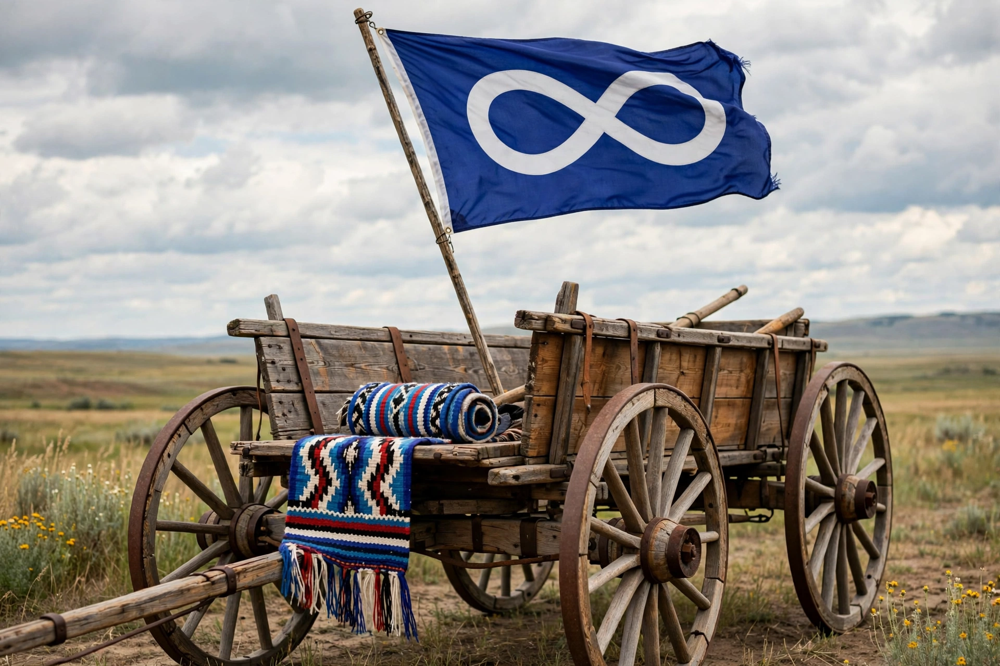

| Métis | |
|---|---|
| Regions | Canada (Prairies, esp. Manitoba), northern United States |
| Languages | French, English, Michif, Bungi |
| Known symbols | Infinity flag, Red River cart, sash (ceinture fléchée) |
| Notable leader | Louis Riel |
The Métis (French: [metis]) are an Indigenous people whose historical homelands include Canada's three Prairie Provinces, extending into parts of Ontario, the Northwest Territories and the northern United States. They are descendants of First Nations women (particularly Cree, Ojibwe and Saulteaux) and European fur traders — mainly French and Scottish — whose unions from the 18th century produced a distinct people with its own culture, language (Michif), flag and national identity. The Métis are recognised in Canada's Constitution Act, 1982 as one of the three Aboriginal peoples of Canada.

Métis communities coalesced around the fur trade posts of the Red River Colony (present-day Winnipeg). Political nationhood crystallised in conflicts with the Hudson's Bay Company, notably the victory at the Battle of Seven Oaks (1816), beneath the infinity flag. In 1869–70, under Louis Riel, the Métis provisional government resisted Canada's acquisition of Rupert's Land (the Red River Resistance), negotiating Manitoba's entry into Confederation in 1870. Promised land grants were largely frustrated by scrip speculation, and many Métis moved west; renewed grievances led to the North-West Resistance of 1885, after which Riel was hanged in Regina — an act that reverberated in Canadian politics for generations.
Métis culture blends Indigenous and European elements: fiddle music and jigging, floral beadwork (the Métis were called the "Flower Beadwork People"), the woven sash, and Michif, a mixed language combining French nouns with Cree verbs. Alberta hosts the only recognised Métis land base in Canada, the eight Métis Settlements established in 1938. In the 2016 Canadian census, 587,545 people self-identified as Métis. The Supreme Court's decisions in R v Powley (2003) and Daniels v Canada (2016) affirmed Métis rights and federal responsibility, and governance is represented by the Métis National Council and provincial organisations such as the Manitoba Métis Federation.
Louis Riel · Red River Resistance · Michif · Indigenous peoples in Canada